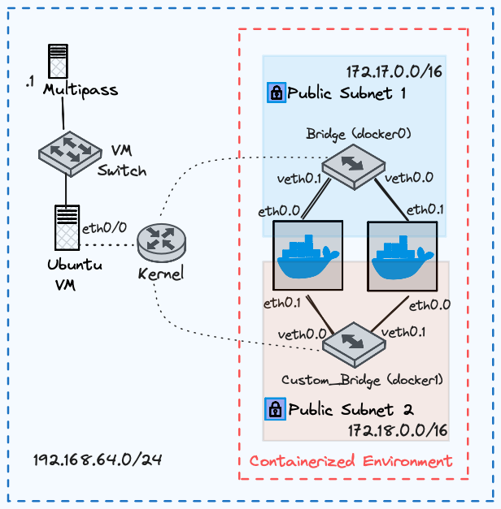

Architecture Deployment Guide
I have a simple architecture that deploys two docker containers in two different subnets. In docker, you can attach one container to several subnets. This is achieved by a new interface being created and assigned to that subnet.
Device Name |
Interface |
IP Address |
Subnet Mask |
Alpine1 |
eth0/0 |
172.17.0.2 |
255.255.0.0 |
Alpine1 |
eth0/1 |
172.17.0.4 |
255.255.0.0 |
Alpine2 |
eth0/0 |
172.18.0.3 |
255.255.0.0 |
Alpine2 |
eth0/1 |
172.18.0.5 |
255.255.0.0 |
Kernel/Ubuntu VM |
eth0/0 |
192.168.64.4 |
255.255.255.0 |
Multipass |
eth0/1 |
192.168.64.1 |
255.255.255.0 |
Bridge |
docker0 |
172.17.0.1 |
255.255.0.0 |
Bridge |
veth0 |
– |
– |
Bridge |
veth1 |
– |
– |
Custom_Bridge |
docker1 |
172.18.0.1 |
255.255.0.0 |
Custom_Bridge |
veth0/0 |
– |
– |
Custom_Bridge |
veth0/1 |
– |
– |
Enter into Ubuntu Shell
Enter Into the Shell of the Ubuntu Server Again
# Terminal-1 Mac/Linux
multipass shell ubuntu
Create a New Network
I noticed that in docker, you only specify a subnet and mask. This makes sense because if you are deploying this on AWS, a VPC will be defined already, all you need to do is create a new subnet mask for your containerized environment.
Create a Custom Bridge
# Terminal-1 Ubuntu
docker network create \
-o com.docker.network.bridge.name=docker1 \
--subnet=172.18.0.0/24 \
--gateway=172.18.0.253 \
custom_bridge
Verify New Bridge
# Terminal-1 Ubuntu
# This is a simulated command and output
ubuntu@ubuntu:~$ docker network ls
NETWORK ID NAME DRIVER SCOPE
6e5ffkvms8c3 bridge bridge local
d3b0029faed7 custom_bridge bridge local <==
e9f55dsdf605 host host local
e9708nj5179a none null local
Pull Alpine Image
I love using Alpine Linux because it’s lightweight.
# Terminal-1 Ubuntu
docker pull alpine
Open a New Terminal
Open New Terminal Tabs and Capture Packets in Each Bridge
docker0
Execute this command to open a new tab. ⌘ + T
Then enter the Ubuntu shell
# Terminal-2 Mac
multipass shell ubuntu
Listen for ARP Packets in Each Bridge
Now that the Ubuntu shell has been initialized, execute the below command to capture all packets.
# Terminal-2 Ubuntu
sudo tcpdump -i docker0 -w capture_docker_0.pcap
Open a third terminal tab ⌘ + T
docker1
Execute another command to listen for all packets in the docker1 bridge interface.
# Terminal-3 Ubuntu
sudo tcpdump -i docker1 -w capture_docker_1.pcap
Create 2 Containers in the Default Bridge, Also Connect Them to the Custom Bridge
Create 2 Containers in the Default Bridge
# Terminal-2 Ubuntu
# Create containers in the default bridge
docker run -itd \
--name=alpine1 \
--ip=172.17.0.2 \
alpine
docker run -itd \
--name=alpine2 \
--ip=172.17.0.4 \
alpine
Connect Containers to Another Network
Connect new interfaces in the containers to another network.
# Connect alpine1 to custom_bridge with IP 172.18.0.3
docker network connect --ip=172.18.0.3 custom_bridge alpine1
# Connect alpine2 to custom_bridge with IP 172.18.0.5
docker network connect --ip=172.18.0.5 custom_bridge alpine2
Send Pings to the Internet From the First Interface
Ping google.com four times in each container from bridge.
# Ping from alpine1 with IP 172.17.0.2
docker exec -it alpine1 ping -I 172.17.0.2 -c 2 google.com
# Ping from alpine2 with IP 172.17.0.4
docker exec -it alpine2 ping -I 172.17.0.4 -c 2 google.com
Send Pings to the Internet From the Second Interface
Ping google.com four times in each container from custom_bridge.
# Ping from alpine1 with IP 172.18.0.3
docker exec -it alpine1 ping -I 172.18.0.3 -c 2 google.com
# Ping from alpine2 with IP 172.18.0.5
docker exec -it alpine2 ping -I 172.18.0.5 -c 2 google.com
View MAC Addresses of Each Bridge Interface
View MAC addresses of Docker0 and Docker1 bridge interfaces.
# Terminal-1 Ubuntu
ip --brief link | grep -E 'docker0|docker1' | awk '{print $1, $3}'
Note
Jump to View Packet Captures
Output:
docker0 02:42:28:a8:cb:f5
docker1 02:42:7c:61:6d:f0
View MAC Addresses of Each Container Interface
View MAC addresses of containers in bridge and custom_bridge networks.
Bridge network
# Terminal-1 Ubuntu
docker network inspect bridge --format '{{range .Containers}}{{.Name}}: {{.MacAddress}}{{"\n"}}{{end}}'
Note
Jump to View Packet Captures
Output-1:
alpine1: 02:42:ac:11:00:02
alpine2: 02:42:ac:11:00:03
Custom bridge network
# Terminal-2 Ubuntu
docker network inspect custom_bridge --format '{{range .Containers}}{{.Name}}: {{.MacAddress}}{{"\n"}}{{end}}'
Output-2:
alpine1: 02:42:ac:12:00:03
alpine2: 02:42:ac:12:00:05
End Packet Captures
Packet Capture 1
Stop ARP packet capture in Terminal-2 Ubuntu.
# Terminal-2 Ubuntu
"control + c"
Packet Capture 2
Stop ARP packet capture in Terminal-3 Ubuntu.
# Terminal-3 Ubuntu
"control + c"
Move the Files to the Local Directory
Move captured packet files to the local directory.
# Terminal-1, 2, or 3 Ubuntu
mv capture_docker_0.pcap /mnt
mv capture_docker_1.pcap /mnt